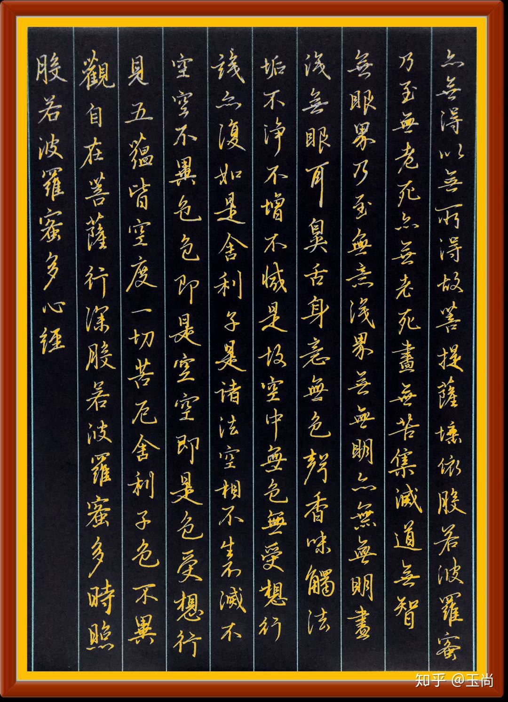

My hobbies返回首页 |
||
|
白球荡于方桌球拍雷霆之势撞击 恰有 心有猛虎，细嗅蔷薇 酣畅淋漓之趣味 |

"飘若惊鸿，宛若游龙" 书法之乐趣 是洒满阳光的午后独有的静谧 是散发着古木醇香宣纸上的笔走龙蛇 是用稚嫩到成熟的笔法书写着一撇一捺的春秋 是多少年后驻足凝望，一路上令人心旷神怡的太阳花 |
文字的魅力要从何处说起呢？ 大抵是昭君金丝绣罗的嫁裙里淌过“独留青冢向黄昏”的悲哀 大抵是苏东坡畅达一生，“归去，也无风雨也无晴”“一蓑烟雨任平生” 大抵是《呼啸山庄》中希斯克里夫郁结爆发的仇恨 大抵是《百年孤独》被一场不知名风暴席卷而去的马孔多以及注定孤独的布恩迪亚家族 |